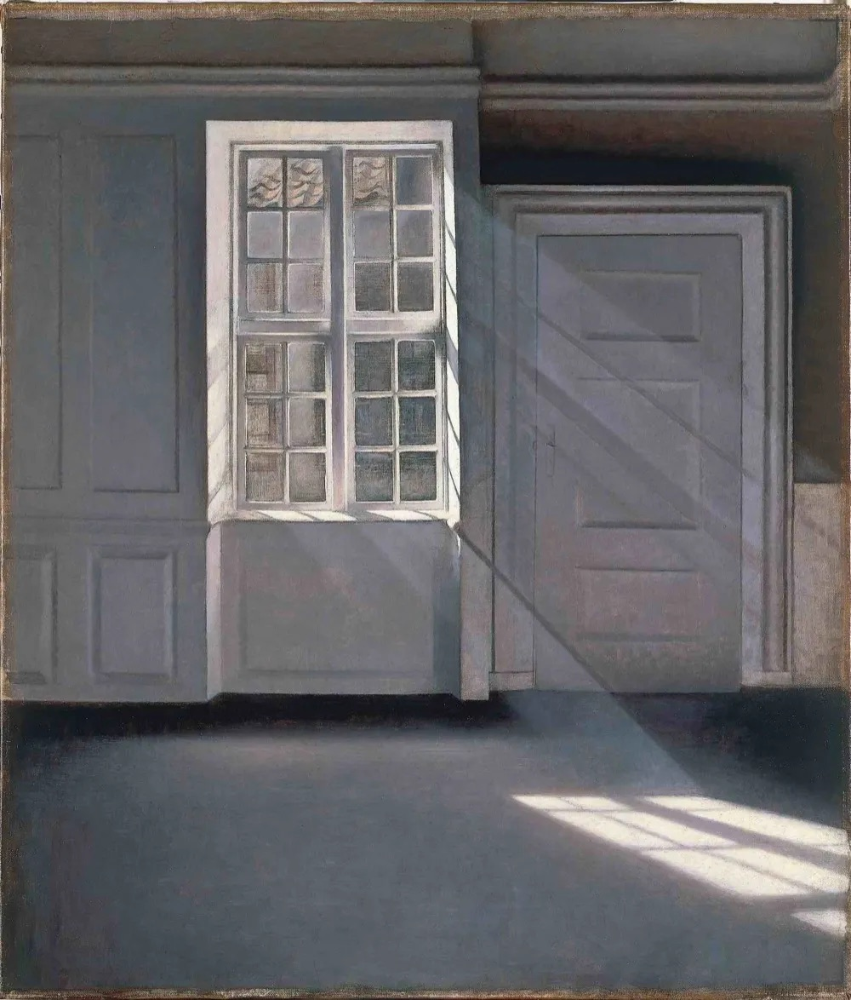
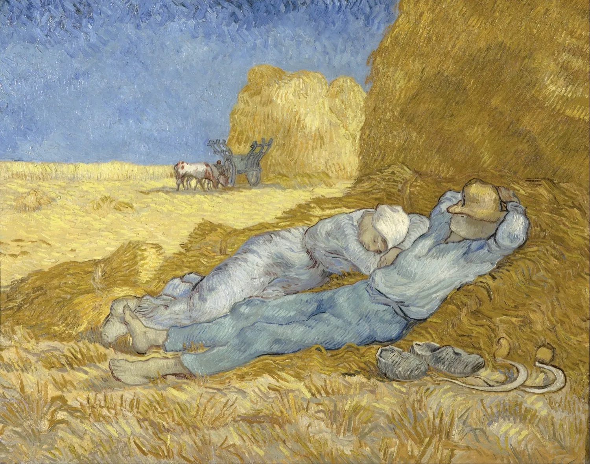
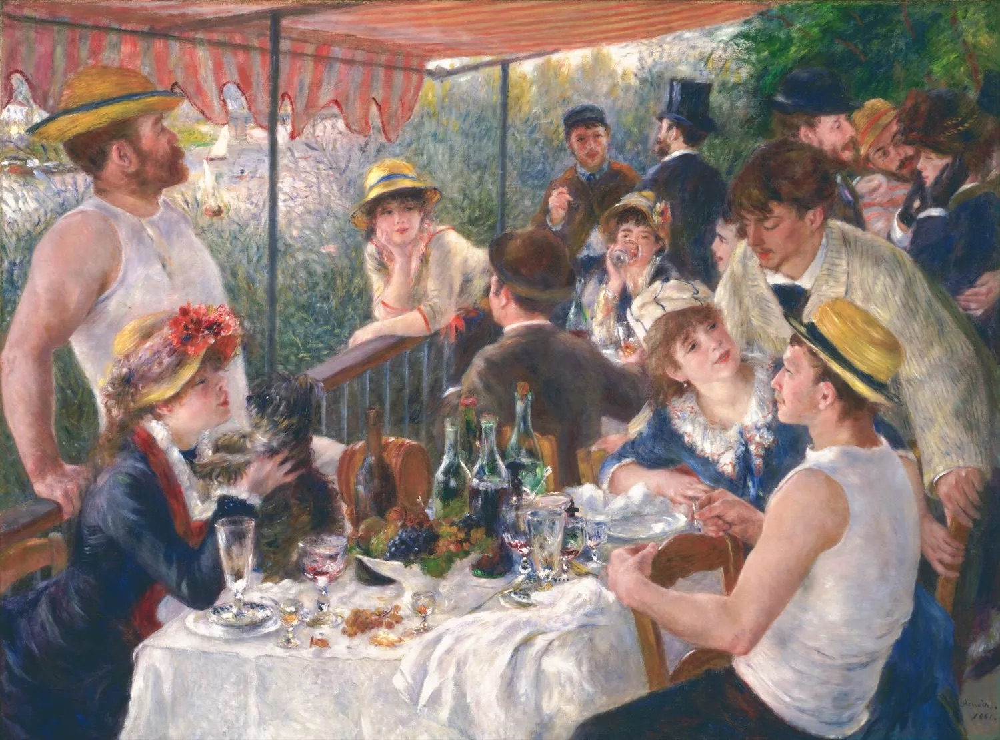

Clinical outcomes
Did an intervention reduce illness or death? Check the population and the absolute difference.
Sleep, relationships, preventive care, and the recovery products sold around them. What the findings show, and what they cannot promise.

01 / Start here
Only about one in five US adults with high blood pressure has it controlled. The national survey found that many didn't know they had it. Blood pressure can be high without symptoms, which makes measuring it useful. CDC NCHS 2024
The three other guides in Staying Alive cover strength, movement, and food.
A trial of blood-pressure treatment answers a different question from a study linking friendships with survival. Neither supplies a personal health ranking.
Did an intervention reduce illness or death? Check the population and the absolute difference.
Did people with a habit fare better? Illness, income, and other habits may explain some of the difference.
Did a treatment change blood chemistry, soreness, or mood? That can be useful without proving disease prevention.
02 / Sleep
Adults aged 18 to 60 should regularly sleep seven or more hours, according to the sleep-medicine consensus. If you need more to function well, a mortality graph isn't a reason to set an earlier alarm. AASM and Sleep Research Society 2015
Observational studies link both short and long sleep with higher mortality. Illness and depression can lengthen sleep, so the direction of cause is uncertain. Cutting a healthy nine-hour sleeper down to seven has not been shown to extend life. Cappuccio et al. 2010
A study of about 61,000 people with wrist trackers linked consistent sleep timing with lower mortality. Work schedules and health may contribute to the association. Try a steady wake time, provided it leaves enough time to sleep. Windred et al. 2024

Loud snoring, witnessed pauses in breathing, gasping awake, or persistent daytime sleepiness are reasons to ask about sleep apnea, repeated obstruction of the airway during sleep. CPAP keeps the airway open with pressurized air. In SAVE it improved sleepiness and quality of life but did not reduce cardiovascular events in patients with established cardiovascular disease. Average use was 3.3 hours a night; we cannot assume low adherence explains the null result. McEvoy et al. 2016
For chronic insomnia, the American College of Physicians recommends cognitive behavioral therapy for insomnia, or CBT-I, as the initial treatment. It addresses the habits and thoughts that keep insomnia going. Persistent insomnia deserves treatment beyond changes to the bedroom. Qaseem et al. 2016
Alcohol can shorten the time it takes to fall asleep while disrupting sleep later in the night. Using it as a sleep aid trades one problem for another. Ebrahim et al. 2013
Caffeine depends on dose and timing. A 2023 meta-analysis found an average reduction of about 45 minutes in total sleep across its experiments, not a fixed cost per cup. In a later crossover trial of 23 male moderate caffeine users, 100 mg had no statistically significant sleep effect at the tested intervals of four, eight, or twelve hours before bed. A 400 mg dose disrupted some sleep measures even twelve hours before bed. The sample was small and excluded women. Gardiner et al. 2023; Gardiner et al. 2025
This is clock arithmetic for an experiment you choose. It does not estimate your metabolism or a safe dose.
These example intervals aren't validated personal cutoffs. Dose still matters. Compare your sleep after reducing caffeine or moving it earlier; the tool cannot promise an unaffected night.
Blue-light-filtering glasses have inconclusive sleep evidence: the small trials in a Cochrane review disagreed. Melatonin has uses in sleep timing, but the label is a separate problem. A 2023 analysis found 22 of 25 US gummy products inaccurately labeled, including one with no detectable melatonin; an earlier supplement analysis also found wide variation. The findings concern the products sampled. Singh et al. 2023; Cohen et al. 2023; Erland and Saxena 2017
03 / Relationships
In a meta-analysis of 148 studies, stronger social relationships were associated with 50 percent higher odds of survival during follow-up. That is an odds ratio. It predicts neither extra years of life nor the effect of adding a weekly dinner. Holt-Lunstad et al. 2010
A later analysis separated loneliness, the feeling of being disconnected, from social isolation, having few contacts, and living alone. Their adjusted mortality odds ratios were 1.26, 1.29, and 1.32 respectively. A ratio of 1.26 means 26 percent higher odds, which is different from a 26 percent higher risk. Living alone doesn't necessarily mean being lonely; a crowded household can be lonely too. Holt-Lunstad et al. 2015

Poor health can make social life harder; income and neighborhood conditions can affect both health and connection. Adjusting for those differences can't remove every shared cause. The association doesn't establish the mortality benefit of a particular social routine.
Choose contact you can repeat: a standing meal, a walk with someone, a group built around work you care about. If you feel isolated despite seeing people often, more appointments may miss the problem.
A sense of purpose tracks with survival in older adults. The study cannot separate having a reason to get up from being well enough to pursue it. Alimujiang et al. 2019
04 / Exposure
Current smokers in a large US study lost more than a decade of life expectancy compared with people who had never smoked. Quitting before age 40 avoided about 90 percent of the excess mortality associated with continuing. Quitting later still helped. Jha et al. 2013
For nonpregnant adults who smoke, the USPSTF recommends behavioral support and approved medications, including nicotine replacement, varenicline, or bupropion. Pregnancy changes the medication discussion. USPSTF 2021
Nicotine e-cigarettes help more people stop smoking than nicotine replacement in the trials pooled by Cochrane. The review does not establish their long-term safety. A smoker's decision about replacing cigarettes is different from a nonsmoker's decision to start vaping; continuing to smoke while vaping also leaves the cigarette exposure in place. Lindson et al. 2025
The old finding that light drinkers outlive abstainers is vulnerable to who gets counted as an abstainer. Some people stop drinking because they are sick. A 2023 analysis that addressed this and other biases found no statistically significant mortality advantage for low-volume drinking. Genetic evidence from China also links higher alcohol consumption with higher blood pressure and stroke risk. Zhao et al. 2023; Millwood et al. 2019
Alcohol causes several cancers. Its Group 1 carcinogen classification means the evidence that it causes cancer is established; it does not mean a glass of wine carries the same risk as smoking. Lower intake reduces exposure. There is no reason to start drinking for heart health. NCI
If you drink heavily and regularly, get medical help with stopping. Alcohol withdrawal can be dangerous. NIAAA
Fine particles from combustion, traffic, and wildfire smoke are associated with premature death. In a large Medicare cohort, the association persisted even at concentrations below the US standards in force at the time. Exposure isn't entirely a personal choice; housing and local air policy matter. Di et al. 2017
Test for radon, a radioactive gas that can enter from the soil and raises lung-cancer risk. If the result is high, arrange mitigation. For smoke or other indoor particles, a properly sized particle filter can reduce exposure in the room where you use it. It doesn't remove every gas, replace ventilation when outdoor air is clean, or fix a source of pollution. EPA; EPA
05 / Preventive care
In SPRINT, high-risk adults without diabetes were assigned to systolic targets below 120 or below 140 mm Hg. Intensive treatment reduced major cardiovascular events by 25 percent and deaths by 27 percent relative to standard treatment during the trial. Annual cardiovascular event rates were 1.65 percent with intensive treatment and 2.19 percent with standard treatment. It also increased some adverse events, including hypotension and acute kidney injury. A clinician should interpret the target alongside your risks and how pressure is measured. SPRINT Research Group 2015; AHA/ACC 2025
NHANES, August 2021 to August 2023. Awareness and control use adults with hypertension as their denominator. CDC NCHS 2024
For home measurements, use a validated upper-arm monitor and a cuff that fits. Avoid smoking, caffeine, and exercise for 30 minutes beforehand. Rest quietly for five minutes, sit with your back supported and feet flat, and support the bare arm at heart level. Take two readings a minute apart and keep a record. Bring the monitor and the readings to your clinician; a single reading doesn't establish the usual pressure. American Heart Association 2025
LDL cholesterol contributes causally to atherosclerosis, the buildup of plaque in arteries. Exposure over time matters. A lipid panel helps assess risk, and ApoB, a measure of the number of certain cholesterol-carrying particles, can be useful in selected situations. Treatment decisions also use age, smoking, blood pressure, diabetes, and family history. Ference et al. 2017
Diabetes screening is also a question of eligibility. The USPSTF recommends screening adults aged 35 to 70 who have overweight or obesity, with earlier consideration for some higher-risk groups. A1c, which reflects blood sugar over the past few months, or fasting glucose can be used. USPSTF 2021
Screening means testing people without relevant symptoms. Symptoms need evaluation on their own schedule. A test can prevent deaths while also producing false alarms, unnecessary treatment, or complications. The following are US recommendations for the populations described, not a complete preventive-care plan.
NordICC randomized invitations to colonoscopy; 42 percent of invitees attended. At ten years, colorectal cancer occurred in 0.98 percent of the invited group versus 1.20 percent of usual care; the mortality difference was not statistically significant. Low uptake complicates interpretation without establishing why mortality didn't significantly differ. Estimates among attendees require additional assumptions. Bretthauer et al. 2022
A meta-analysis of randomized trials of influenza vaccination found fewer major cardiovascular events, with the clearest signal in patients with recent acute coronary syndrome. Udell et al. 2013
A 2025 Welsh natural experiment used a birth-date cutoff for eligibility for Zostavax, the older live shingles vaccine. It estimated 3.5 percentage points fewer new dementia diagnoses over seven years among vaccine recipients, corresponding to a 20 percent relative reduction. The estimate applies to that older population and vaccine. It does not establish the same dementia effect for Shingrix, the vaccine now used in the US. Its established reason for use is preventing shingles and its complications. Eyting et al. 2025; CDC
Interdental cleaning has low-certainty evidence for reducing gingivitis, inflamed gums, alongside brushing. The review did not assess heart attacks or dementia. Dental pain, infection, and losing teeth are enough reason to seek dental care. Worthington et al. 2019
In ACHIEVE, hearing aids and audiological counseling did not slow three-year cognitive decline in the whole trial. A prespecified analysis suggested benefit in the older, higher-risk subgroup. Treating hearing loss helps communication; dementia prevention remains a more qualified claim. Lin et al. 2023
06 / Daylight
Light reaching your eyes helps set the timing of sleep and wakefulness. Outdoor daylight is often a convenient source of bright daytime light, while dimmer evenings and a dark bedroom support the day-night contrast. Timing matters: the best schedule for a night-shift worker may differ from a daytime worker's. Brown et al. 2022
The light consensus measures melanopic equivalent daylight illuminance at the eye, accounting for the spectrum's effect on the body clock. Ordinary lux alone doesn't capture it. A window or appropriate indoor lighting can contribute. Weather, latitude, time of day, and the light's direction all change the exposure, so there is no universal ten-minute outdoor dose in that recommendation.
VITAL tested 2,000 IU of vitamin D a day in about 26,000 midlife and older adults who weren't selected for deficiency. It did not reduce the primary outcomes of invasive cancer or major cardiovascular events. Its fracture analysis also found no reduction. These findings do not answer whether a diagnosed deficiency should be treated. Manson et al. 2019; LeBoff et al. 2022
During the original trial, vitamin D was associated with a 22 percent relative reduction in confirmed autoimmune disease. After two additional years off the randomized treatment, the seven-year hazard ratio, comparing event rates during follow-up, was 0.98, with a confidence interval spanning benefit and harm. Newly confirmed cases also revised the original on-treatment estimate to 0.85, which was no longer statistically significant. Hahn et al. 2022; Costenbader et al. 2024
For generally healthy adults under 75, the 2024 Endocrine Society guideline advises the usual recommended intake and suggests against routine extra doses or vitamin D testing. It gives different advice for selected groups, including adults 75 and older, pregnancy, and high-risk prediabetes. Established medical reasons for testing or treatment are a separate matter. Endocrine Society 2024
A Swedish cohort linked avoiding sun exposure with higher mortality in women. It cannot establish that ultraviolet exposure prolongs life: sun habits travel with other differences in health and lifestyle. The sunscreen trial offers a different kind of evidence, with fewer invasive melanomas after assignment to daily sunscreen, although the event counts were small. Lindqvist et al. 2016; Green et al. 2011
Get daytime light while protecting your skin. Shade, clothing, and sunscreen let you spend time outside with less ultraviolet exposure. Seeing daylight does not require tanning or burning, and you should never stare at the sun. FDA
07 / Heat
The sauna mortality study followed 2,315 Finnish men. Those reporting four to seven sessions a week had a 40 percent lower adjusted rate of death from any cause than those reporting one session a week. That comparison does not show what would happen if everyone in the once-a-week group began going daily. Laukkanen et al. 2015
Health and the circumstances that permit frequent sauna use may contribute to the association. Adjustment cannot remove all those differences. The findings have limited reach beyond the men and sauna practice studied.
In a small controlled study with 20 young sedentary adults who completed it, eight weeks of hot-water heat therapy improved blood-vessel measures and blood pressure. Investigators assigned matched groups; it was not randomized. It tested immersion, not sauna use, and did not measure disease prevention or lifespan. Brunt et al. 2016
Use a sauna if you enjoy it, without treating the cohort percentage as a promised benefit. Avoid alcohol with heat, leave if you feel faint or unwell, and ask about suitability if illness or medication affects your response to heat or blood pressure. Laukkanen et al. 2018
08 / Stress
Workers reporting job strain, high demands with little control, had a higher rate of coronary heart disease in a large pooled analysis. This was observational evidence. The problem may include working conditions that a breathing exercise cannot change. Kivimaki et al. 2012
Meditation programs produced modest improvements in anxiety, depression, and pain in a review of randomized trials. The review did not establish superiority over active alternatives such as exercise or other behavioral treatments. Goyal et al. 2014
Slow breathing is a simple way to try settling yourself. Sit comfortably and breathe gently at a pace that feels easy, without forcing deep breaths or long holds. Stop if you become dizzy. Blood-pressure trials are inconsistent, so use it as an optional calming practice, not a way to replace prescribed treatment. de Freitas Goncalves et al. 2022
A small Wim Hof experiment found that a combined training program changed adrenaline and inflammatory responses to an injected bacterial component in 24 healthy men. The experiment didn't test infections, autoimmune treatment, or lifespan. Kox et al. 2014
09 / Cold
Repeated cold-water immersion immediately after lifting can interfere with the adaptation you're training for. In a small twelve-week trial, the cold-water group gained less muscle and some measures of strength than the active-recovery group. It doesn't establish an exact waiting interval after lifting. Roberts et al. 2015
Cold can reduce the soreness people report after exercise. That may be useful when short-term comfort matters, but less soreness doesn't establish better muscle growth or faster recovery of every aspect of performance. Hohenauer et al. 2015
The dopamine figure comes from ten men immersed for an hour in water around 57 F. The researchers measured blood dopamine, which rose about 250 percent. They did not measure a lasting increase in brain dopamine or test a two-minute home plunge. Sramek et al. 2000
In a randomized cold-shower trial, participants reported 29 percent less sickness absence from work, while reported illness days did not differ. The trial doesn't establish why they missed less work, or show that cold prevented illness. Buijze et al. 2016
The immediate cold-shock response can affect breathing and heart rhythm. Avoid hyperventilating or holding your breath in or near water. A heart condition or history of fainting is a reason to discuss cold immersion before trying it. No trial cited here establishes a longevity benefit. Shattock and Tipton 2012
10 / Products
Ask what outcome a product changed, in whom, and against what comparison. A supplement that raises a blood marker may still have no demonstrated effect on illness. Evidence for one medical use also doesn't validate every claim on a consumer panel.
In three cohorts totaling about 390,000 adults, use was not associated with lower mortality. That is observational evidence, not proof that vitamins are never useful. Deficiency and pregnancy involve different needs. Loftfield et al. 2024
Ordinary omega-3 supplements did not reduce VITAL's primary major cardiovascular outcome. Prescription icosapent ethyl reduced cardiovascular events in a selected, high-risk group already taking statins. Manson et al. 2019; Bhatt et al. 2019
In the ATBC trial, beta-carotene supplementation increased lung-cancer incidence in male smokers. ATBC Study Group 1994
NCCIH finds no convincing research supporting these programs for removing toxins or improving health. Restriction, laxatives, or supplements can create problems of their own. NCCIH
A systematic review found no substantiated basis for this diagnosis. Persistent exhaustion deserves evaluation for conditions that can be diagnosed and treated. True adrenal insufficiency is a different, recognized disease. Cadegiani and Kater 2016
For red-light panels, NAD+ products, and glucose monitors sold to people without diabetes, a general promise of better health is too broad to assess. Ask for a human trial of the specific product, indication, and outcome being advertised. A result about skin, a blood marker, or glucose awareness does not by itself demonstrate longer life.
11 / Follow-up
Select subjects to follow up on this week or at an appointment. The tool keeps them in page order; it cannot decide which matters most.
Nothing is saved or sent.
No subjects selected
Select any subjects above to make a follow-up list. An empty list is not a health assessment.
Your symptoms, diagnoses, medications, and preferences affect how these findings apply to you. Discuss changes to treatment, screening, or supplements with your clinician.
12 / Sources
Research and guidance cited in the article.
_-_Google_Art_Project.jpg){kind=link}